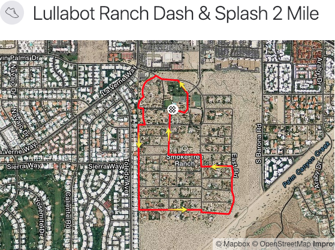

Date and Start Times
The fun run will be held on Wednesday and the start times will be
staggered, beginning at 1:15pm. Whether you are walking or running,
the goal is to have as many people coming to the finish line at
the same time as possible. More info to come.
Dash & Splash!
With three options to choose from, pick the course the best suits
you...literally! We end at the pool so you can jump right in and
cool off before the 3pm activities! Spectators are encouraged to
cheer and high-five as much as possible.
Course Markings
To minimize disruption of the residents, course markings will not
be placed on the roads around Smoke Tree Ranch, so please make sure
you know the route, print off a copy to carry, run with your phone,
or load the route into your GPS watch.
Aid Stations
Again, to minimize disruption of the residents, aid stations won't
be placed around the ranch. Carry water with you if you think
you'll need it. Take into account the heat, and remember, it's
a fun run!
1 Mile Course
The one mile course begins outside the patio gates in front of Disney hall and follows Conejo Trail around the golf course onto Moronga Trail toward the NW entrance. Turn left on W Rd, then stay to the right wherever possible to keep along the perimeter. Make a left at Algodones Trail, then a left on Ranch House road to cruise your way into the finish.

2 Mile Course
The two mile course follows the same route as the 1 mile course to get the the western perimeter of the ranch. Take W Rd along the western perimeter until you reach the last road: San Jacinto Trail. Take San Jacinto to the left, then bear slightly to the right at Middle Rd to stay on San Jacinto. This will turn into E Rd. Keep to the right on E Rd, then make a left on Cocopah Trail. First right on Middle Rd, then a left on Algodones Trail, and a right on Ranch House Rd to cruise into the finish.

5k Course
Follow the same route as the 1 and 2 mile courses to get onto W Rd. Follow W Rd past the last road where it becomes the perimeter trail. Take the perimeter trail around the ranch until it meets up with Middle Rd, the main road. Stay on Middle Rd then make a right at Algodones Trail, then a right onto Ranch House Rd to cruise into the finish.